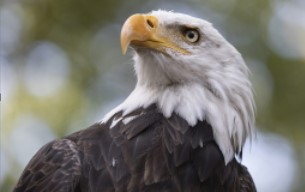

Introduction to Title 16 - Conservation
Under U.S. Federal Law, Title 16 covers all laws related to conservation of the environment, including wildlife, fish, and plants. Agencies like the National Park Service (NPS), National Oceanic and Atmospheric Administration (NOAA), Environmental Protection Agency (EPA), and Fish and Wildlife Service (FWS) enforce these laws with the main goal of protecting, conserving, and managing the nation's natural resources and wildlife.
Agencies Under Title 16
Several key federal agencies operate under Title 16 to enforce conservation laws:
- National Park Service (NPS): Manages and preserves national parks, monuments, and historical sites.
- Fish and Wildlife Service (FWS): Protects fish, wildlife, and plants, especially endangered species.
- Environmental Protection Agency (EPA): Regulates pollution to safeguard ecosystems.
- National Oceanic and Atmospheric Administration (NOAA): Focuses on marine and coastal conservation.
Notable Conservation Laws Under Title 16
Title 16 encompasses a wide range of laws that are essential for the conservation of the environment, including:
- Migratory Bird Treaty Act: Protects migratory birds by regulating hunting and other potentially harmful activities.
- Endangered Species Act: Safeguards species that are at risk of extinction and conserves the ecosystems they rely on.
- National Park Service Organic Act: Establishes the NPS to manage and conserve the nation's parks.
- Marine Mammal Protection Act: Provides protections for marine mammals within U.S. waters.
Notable U.S. Conservationists
Several influential figures have contributed to U.S. conservation efforts:
- Theodore Roosevelt: Known as the “Great Conservationist,” he established many wildlife refuges and national parks. He is famously
credited for preserving the Grand Canyon, quoting, "Leave it as it is. You cannot improve on it. The ages have been at work on it, and man can only mar it.”
Roosevelt's work helped inspire the creation of several federal conservation agencies such as the United States Forest Service (USFS), National Park Service (NPS), and the Fish and Wildlife Service (FWS).
- Rachel Carson: Author of Silent Spring, her work led to greater awareness of pesticide dangers and inspired the creation of the EPA.
Did You Know?
Species such as our beloved national symbol, the Bald Eagle, were threatened with near extinction due to the pesticide DDT. Rachel Carson discovered that DDT caused the eggshells of nesting eagles to be so brittle that brooding mothers would shatter them. After the ban of DDT, Bald Eagle populations have rebounded and now thrive!

- John Muir: A famous naturalist who helped inspire the National Park System and founded the Sierra Club.
|